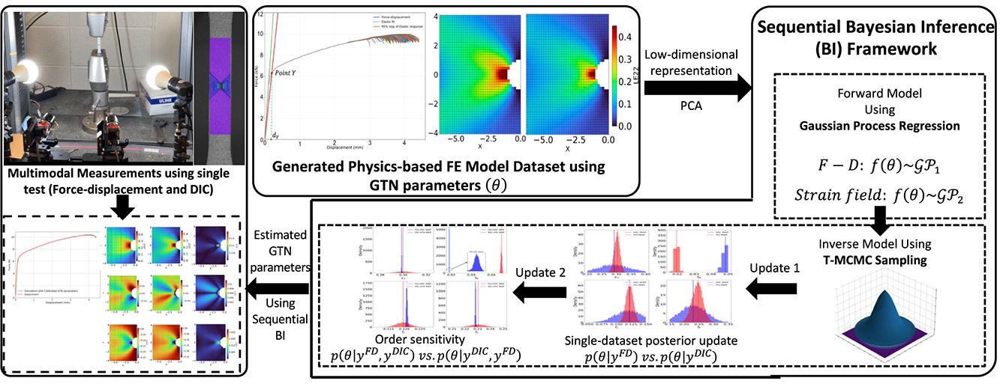
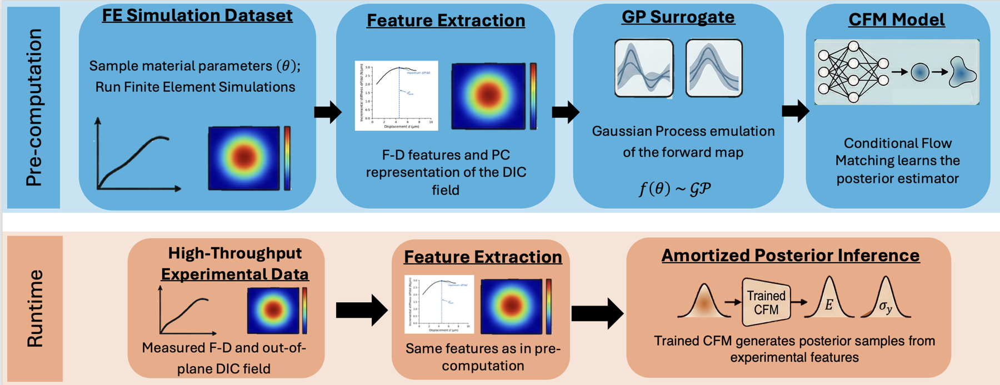
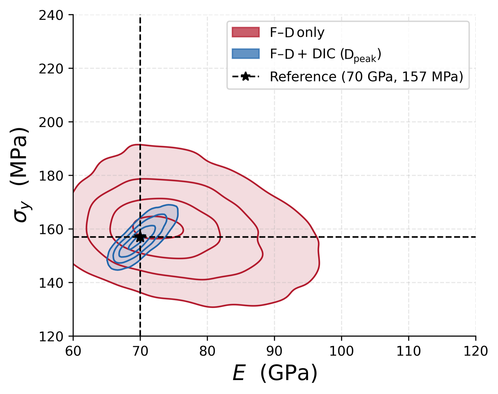

Physics-based modeling × data-driven inference
Connecting simulations with experiments to characterize materials faster.
I am a Mechanical Engineering Ph.D. researcher at the Georgia Institute of Technology, advised by Prof. Surya R. Kalidindi. My work combines finite-element modeling, experimental metrology, and probabilistic machine learning to extract reliable material properties from limited and multimodal measurements.
I develop validated ABAQUS models and automated Python/HPC workflows that connect constitutive and damage parameters to force–displacement curves and full-field Digital Image Correlation measurements. I then use Bayesian inference, Gaussian-process surrogates, and Conditional Flow Matching to quantify uncertainty and replace repeated, expensive simulations with fast posterior inference.
My broader interests include nonlinear mechanics, damage and fracture, simulation-based inference, active learning, and microstructure–property–performance relationships.
Selected work
Research
Multimodal material characterization—from finite-element simulation and experimental measurement to uncertainty-aware inference.
Sequential Bayesian inference for GTN damage modeling
I developed a surrogate-accelerated framework to identify Gurson–Tvergaard–Needleman damage parameters for AA6111 aluminum. The method combines specimen-level force–displacement curves with spatially resolved DIC strain fields, compresses both data streams with PCA, and uses Gaussian-process emulators with Transitional MCMC to recover full posterior distributions rather than a single best fit.

Amortized posteriors from small-punch-test measurements
I developed a likelihood-free GP–Conditional Flow Matching framework for rapid estimation of Young’s modulus and yield strength from early small-punch-test measurements. The model learns from synthetic force–displacement and DIC observations, then generates posterior samples for a new experiment without running a fresh Monte Carlo chain. Adding the full-field DIC measurement substantially reduces posterior uncertainty compared with force data alone.


Active simulation-based inference
A posterior-guided active-learning framework that selects high-value finite-element simulations while maintaining global model accuracy. The bounded autonomous workflow handles candidate generation, ABAQUS execution, validation, failure recovery, surrogate retraining, uncertainty assessment, and reproducible provenance tracking.
AI-assisted microstructure realization
A machine-learning-guided workflow for designing tungsten–copper microstructures with targeted anisotropic thermal conductivity. The framework connects synthetic microstructure generation, FFT homogenization, and an autoencoder-based surrogate to solve forward characterization and inverse design problems.
Recent
Highlights
- Named a Novelis Graduate Scholar at Georgia Tech.
- Published first-author work on multimodal Bayesian calibration of the GTN damage model in Acta Materialia.
- Completed a reproducible, expanded-domain campaign of 63 ABAQUS simulations with automated integrity checks, monitoring, and ODB extraction.
- Presented GTN damage-model calibration using Bayesian inference and DIC at the TMS Annual Meeting.
Selected
Publications
-
2026
Sequential Bayesian Inference of the GTN Damage Model Using Multimodal Experimental Data
M. A. Seyed Mahmoud, D. Renner, A. Khosravani, and S. R. Kalidindi · Acta Materialia 306, 121902.
-
2026
Amortized Posteriors for Estimation of Material Constitutive Parameters from Multimodal Measurements on Small Punch Tests
M. A. Seyed Mahmoud, A. Venkatraman, R. Mahat, S. Mitra, and S. R. Kalidindi · arXiv preprint, under review.
-
2024
Investigation of Kinetics of Passive Layer Formation on Various Microstructures in Thermo-Mechanically Treated Steel in Simulated Concrete Pore Solution
G. Daviran, M. A. Seyed Mahmoud, S. R. Kalidindi, and A. Poursaee · Materialia.
-
2023
Design of Refractory Alloys for Desired Thermal Conductivity via AI-Assisted In-Silico Microstructure Realization
S. M. A. Seyed Mahmoud et al. · Materials 16(3), 1088.